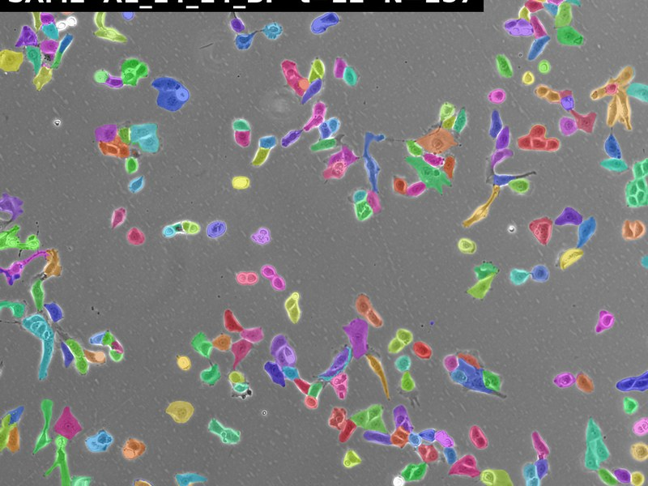
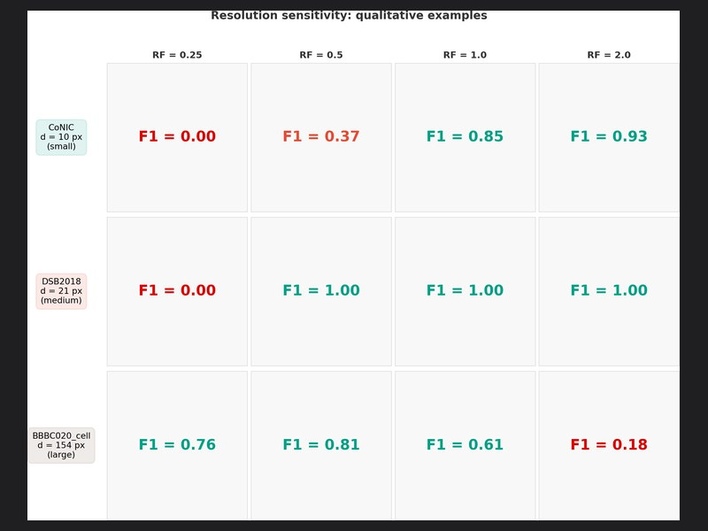
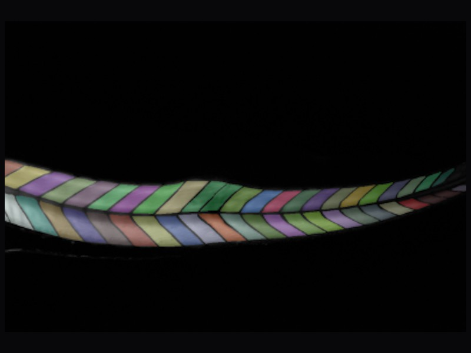
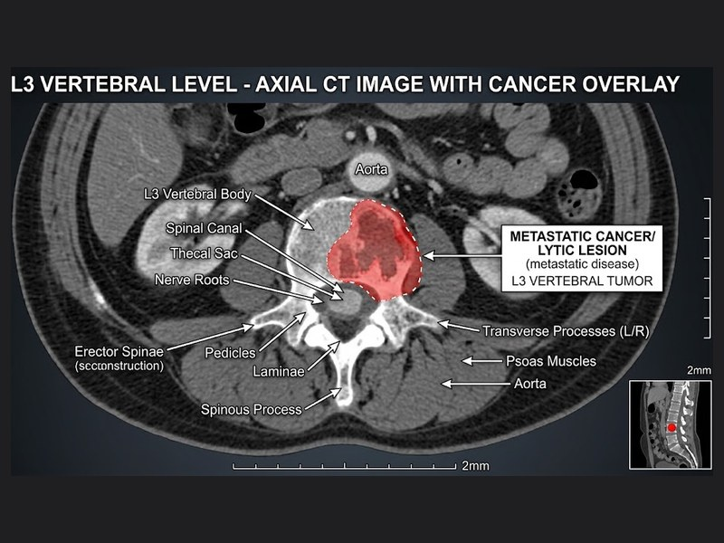

About
Hey there 👋
I'm Yunshu Chen
Medical AI researcher — coronary imaging, foundation models, agentic clinical decision support
-
49.6M
IVUS frames pre-trained on
-
~4 TB
clinical & microscopy data managed
-
3
first-author papers under review
-
4
clinical & industry partners
What I work on
-
Clinically-validated segmentation
-
Medical foundation models
-
Agentic clinical decision support
-
Research infrastructure
Selected projects
-

GeoCat — Coronary IVUS
AAAI-2027Validated at decision level, not pixel level. Dice 0.922–0.930; 84% agreement with clinicians on the treatment threshold.
-

IVUS-FM — Foundation model
In progress49.6M frames, 28,753 pullbacks, two vendor platforms. Vendor-locked supervision for zero-shot cross-device transfer.
-

IVUS Agent — Clinical reporting
Agentic AIReAct-orchestrated reports where every number comes from a deterministic tool. Local Qwen2.5-7B; 35 cases clinician-reviewed.
-

SAM2 as a tracking linker
In progressBeat a SOTA tracker with no retraining — CHOTA 0.8603 vs 0.8511, p < 0.001. Ships five falsified directions.
-
LeadCell — Cell foundation model
Deployed100K+ images, 8M+ instances, 89% mAP. Beat four published models across 12 benchmarks; shipped to production.
-

Cell size × resolution benchmark
Benchmark19 datasets × 9 frozen models on an 8-GPU framework. The data audit caught duplication and corruption in public sets.
-

Confidence-Adaptive Trimap
IEEE BIBMBoundary bands derived from the model's own confidence. Holds under domain shift where fixed kernels collapse.
-

PredictX — Clinical data pipeline
Western Health302 patients, 57-column schema. Caught and root-caused two classes of silent data corruption before modelling.